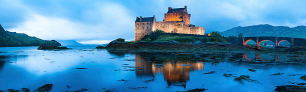
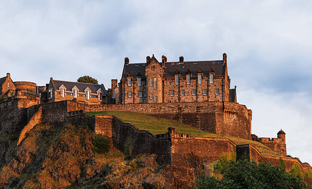
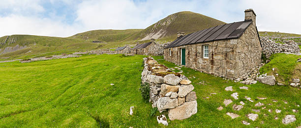
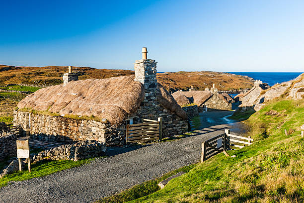
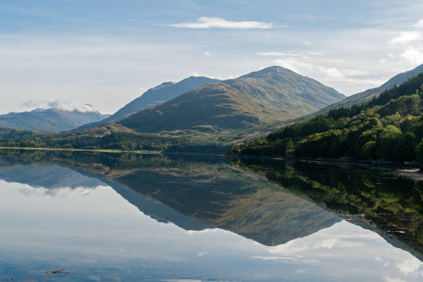

Discover Some True Scottish Culture And Just What It Can Bring:
Discovering authentic Scottish culture is an immersion into a heritage where history and modern life coexist seamlessly.
Scotlands cultural identity is deeply rooted in its past, shaped by ancient clan systems, a strong sense of independence, and a lasting connection to the natural landscape.
whether is be:
Castles set high amongst the hills.


historic stone villages.


or its winding lochs.


This lends Scottish culture a strong sense of depth and stability, fostering a feeling of connection to something longstanding and meaningful, which will most likely still be around long after we are gone.